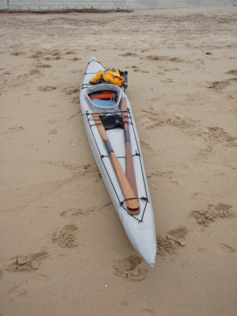

| Sonnet 16 by Robert Tongen (US) | Menu Previous Page Next Page |
|

Robert from Thousand Oaks, CA has completed a Sonnet 16. His comments regarding paddling in surf......"Overall 1st impressions were good. assembles fairly quickly the first time in~15 minutes, weighs 22 pounds, comfortable to sit in and paddle, handles well, the most stable boat I have paddled. All the others I have had to concentrate on balance as well as paddle, this one just need to paddle. Handles surf well, get some leakage around the spray skirt in side surfing, very stable when flooded. It rolls easy, static brace very simple the first time. From a capsize to side sculling it is back upright with 2 skulls.
Some things not so positive, Since there is no rocker on the boat, your weight creates the rocker, and so if you have any water in the boat, you are sitting in it. Hard to drain all the water out of the boat. Always some trapped in the sponson sleeves, so when folding up there is always some water left in and when transporting and assembling again there is still some water in it. When playing in the surf yesterday, I was really impressed with the stability, but got caught in several high braced waves, where it got hammered pretty well. On one of them the tubing on the chine took a bend, and the cross braces that snap into place came apart. The boat lost some of its shape, but still stable in the surf, and after paddling out through the surf, realized that the spray skirt was about level with the waterline and there was quite a bit of water in the boat, but yet the boat was very stable. Paddled back to shore and removed the water from the boat, saw the bent tubing, and could not keep the cross bracing in placde, and yet paddled easy back to the put in point. Think I will like the boat, very relaxing to paddle, turns 180 degrees in nearly its own length, but realize that it is not built for heavy surf."
|
|